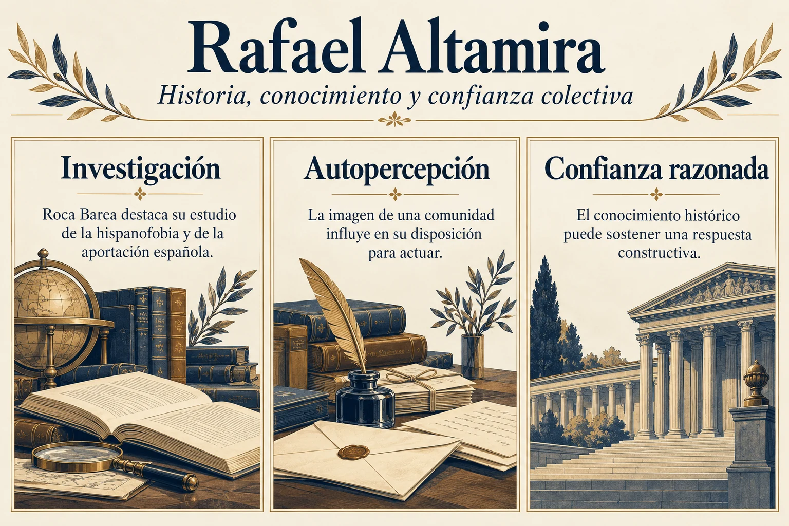

Volumen 3 · Capítulo 10 · Entrega 33
Krausismo Institución Libre de Enseñanza y Rafael Altamira
Estudio expositivo de Fracasología de María Elvira Roca Barea
El examen de la Institución Libre de Enseñanza introduce una distinción que impide reducir el capítulo a una condena uniforme de las élites. Roca Barea critica el prestigio que amparó la importación del krausismo, reconoce el valor de la renovación pedagógica surgida bajo su nombre y destaca en Rafael Altamira una actitud constructiva ante la historia. Los tres elementos conviven en el apartado. Entender su relación permite conservar el matiz de una autora que diferencia entre dependencia intelectual, capacidad institucional y resultados del trabajo especializado.
El punto de partida es Karl Christian Friedrich Krause, figura del idealismo poskantiano cuya repercusión española habría sido muy superior a su importancia alemana. La misión de Julián Sanz del Río en Alemania, promovida en 1843 por Pedro Gómez de la Serna, se sitúa en una búsqueda anterior de referentes germánicos. Según Roca Barea, la novedad que se atribuía a la doctrina no coincidía con su posición real en la evolución del pensamiento europeo. La crítica se dirige tanto al desfase como a la autoridad obtenida por su procedencia. Sin embargo, el krausismo español adquirió una vida propia: su alcance social procedió sobre todo del movimiento pedagógico, más que del conocimiento generalizado de la metafísica de Krause.
Francisco Giner de los Ríos ocupa el centro de esa transformación práctica. El ensayo presenta la Institución, fundada en 1876 por catedráticos represaliados, como una iniciativa que logró continuidad y apoyo público e influyó en la Junta de Ampliación de Estudios, la Residencia de Estudiantes y la formación del magisterio. Rechaza por ello una descripción exclusivamente marginal o fracasada de su trayectoria. Señala su carácter minoritario y su papel en la formación de élites, pero reconoce sus logros. A la vez, sostiene que esa renovación pudo coexistir con el regeneracionismo y el pesimismo del 98 sin conseguir neutralizarlos.
Altamira encarna la posibilidad de otro resultado. Vinculado a la Institución a través de sus relaciones personales y de su formación, se dedicó a la historia, el derecho y la enseñanza sin adoptar el dramatismo como principio de interpretación. Roca Barea destaca su trabajo por el restablecimiento de vínculos con Hispanoamérica y su viaje de 1909–1910 como delegado cultural de la Universidad de Oviedo. El americanismo se entiende como una labor de comunicación y revisión de prejuicios, no como un regreso al dominio político. El ensayo recuerda también las suspicacias que despertó: combatir una imagen hostil de España podía interpretarse como una manifestación del mismo imperialismo que se intentaba distinguir de esa tarea cultural.
En Psicología del pueblo español, Altamira identificó la hispanofobia como aversión alimentada por prejuicios y desconocimiento. Roca Barea le concede una posición precursora en el análisis de la leyenda negra y lamenta no haberlo tratado con suficiente amplitud en su obra anterior. La defensa de la aportación española, incluida su legislación indiana, aparece asociada a la especialización histórica y jurídica. También resulta decisiva su idea de que los pueblos actúan según el juicio que forman de sí mismos. Una comunidad que se define como degenerada pierde la confianza necesaria para esforzarse; la confianza razonada puede, por el contrario, sostener la superación de las crisis.


Ampliar imagenLeer el esquema y sus referencias
- Investigación. Roca Barea destaca su estudio de la hispanofobia y de la aportación española
- Autopercepción. La imagen de una comunidad influye en su disposición para actuar
- Confianza razonada. El conocimiento histórico puede sostener una respuesta constructiva
Fuente de lectura: Roca Barea, Fracasología (2019), apartado desarrollado en la entrega 33. Esquema expositivo de la interpretación de la autora; no cita literal.
Se conserva en forma de paráfrasis la idea de la autopercepción colectiva. Se eliminan la cita literal no localizada y la atribución del PNG a la UNESCO de un cargo anterior a su existencia.
La autora relaciona el olvido de Altamira con un patriotismo difícil de integrar en los relatos dominantes. Su exilio y su rechazo a regresar bajo el franquismo no bastarían para explicarlo. Un liberalismo patriótico y constructivo incomodaba tanto a la apropiación dictatorial de la patria como a su posterior identificación con aquella dictadura. El contraste final con la Generación del 27 refuerza la alternativa: conjugar tradición y vanguardia, cultura popular y cosmopolitismo, sin necesitar una conversión cultural. Así termina el capítulo con una posibilidad interna de renovación. La atención se trasladará ahora a Weber para estudiar una explicación del éxito económico que, según Roca Barea, volvió a fortalecer la jerarquía cultural entre el norte protestante y el sur católico.
Referencia de la entrega y criterio de lectura
Roca Barea, 2019, cap. 10, «La Institución Libre de Enseñanza y Rafael Altamira», notas 415–428.
El texto reconstruye el argumento de Roca Barea. Las alusiones a otras obras proceden del ensayo y no implican la consulta independiente de todas ellas. Criterio editorial de la colección.
Referencia de la entrega. Roca Barea, 2019, cap. 10, «La Institución Libre de Enseñanza y Rafael Altamira», notas 415–428.